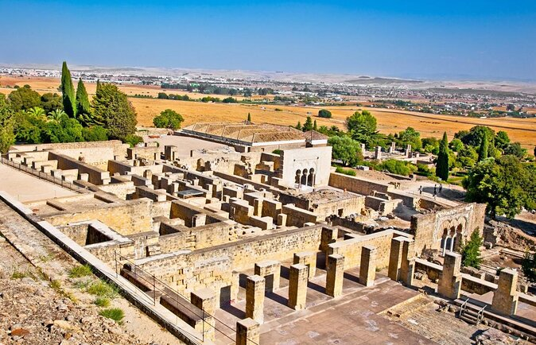

<!DOCTYPE html>
<html lang="es">
    <head>
        <title>Turismo Córdoba</title>
        <meta charset="utf-8">
        <meta name = "description" content="Cordoba ciudad patrimonio">
        <meta name = "keywords" content="Turismo, patrimonio, viajes">
    </head>
</html>
<body>
    <header>
        <h1 id="top">Córdoba Ciudad Patrimonio</h1>
    </header>

    <nav>
        <ul>
        <li><a href="index.html">Inicio</a></li>
        <li><a href="mezquita.html">La Mezquita</a></li>
        <li><a href="casco_historico.html">Casco Historico</a></li>
        <li><a href="los_patios.html">Los Patios</a></li>
        <li><a href="medina_azahara.html">Medina Azahara</a></li>
        <li><a href="contactos.html">Contacto</a></li>
        </ul>
    </nav>
    <main>
        <section>
            <article>
                <h2>Medina Azahara</h2>
                
                <p>
                    Medina Azahara, castellanización del nombre en árabe Madīnat al-Zahrā («la ciudad brillante»),​ fue una ciudad palatina o áulica que mandó edificar el primer califa de Córdoba, Abderramán III, a unos 8 km en las afueras de Córdoba en dirección noroeste, a los pies de Sierra Morena.
                </p>
                <p>
                    Los principales motivos de su construcción son de índole político-ideológica: la dignidad de califa exige la fundación de una nueva ciudad, símbolo de su poder, a imitación de otros califatos orientales y sobre todo, para mostrar su superioridad sobre sus grandes enemigos, el recién instaurado Califato fatimí de Ifriqiya, la zona norte del continente africano. Además de oponentes políticos, lo eran también en lo religioso, ya que los fatimíes, chiíes, eran enemigos de los omeyas, mayoritariamente de la rama islámica suní.
                </p>
                <p>
                    El yacimiento arqueológico de Medina Azahara está declarado Bien de interés cultural en la categoría de Monumento desde el año 1923,​ además de ser declarada oficialmente como Patrimonio de la Humanidad de la Unesco el 1 de julio de 2018. En 2019 recibió más de 285 672 visitantes, siendo uno de los espacios culturales más visitados de Andalucía,​ mientras que en 2020, debido a las restricciones de movilidad ocasionadas por la pandemia de COVID-19, las visitas se redujeron a 87 315 personas.
                </p>
            </article>
            
        </section>
        <section>
            <aside>
                Agenda Publicidad
            </aside>
        </section>

    </main>
    <a href="#top">Top</a>
    <footer>
        &copy; Todos los derechos: Andrés Rodríguez Machado
        <address>Cordoba, España</address>
    </footer>
</body>